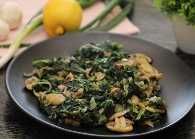

it is a popular Arabic food, consisting of rice and many vegetables that are added according to desire, such as eggplant, peas, carrots and others. They are relatively hard, but delicious
Pasta with tomato sauce
Pasta with tomato sauce, a very quick and easy recipe at the same time delicious, and you can add a vegetable salad to its side to make it a quick lunch.
Flafel
fried falafel, which is a crushed chickpeas with the addition of parsley, and people usually make it in the form of circles and are packed in loaves of bread as a rich meal
Spinach
It is a type of plant rich in vitamins that is cooked in several ways, mushrooms can be added like the recipe above and it can be served with rice as well as a quick meal